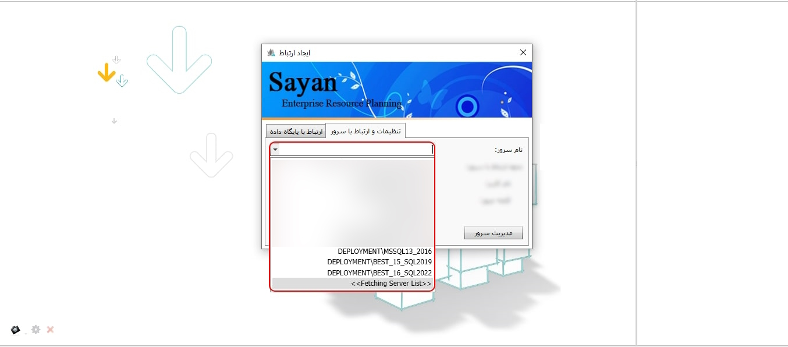

هنگام اجرای نرم افزار سایان پنجره ایجاد ارتباط تصویر زیر شماره یک نمایش داده می شود.

جهت تنظیمات و ارتباط با سرور به تصویر شماره دو مراجعه نمایید.

-تنظیمات و ارتباط با سرور(کادر شماره یک): با انتخاب این بخش شما می توانید مشخصات اتصال نرم افزار به پایگاه داده را وارد نمایید.
برای ادامه مطلب به تصویر شماره سه مراجعه نمایید.
-نام سرور(کادر شماره یک): در این بخش، بهصورت پیشفرض، نام سرور / Instance Name SQL نمایش داده میشود. جهت برقراری ارتباط نرم افزار با سرور نیاز است که به درستی انتخاب و تنظیم گردد.

fetching server list: در صورتی که منوی مقابل نام سرور را کلیک کنید و اندکی صبر نمایید سیستم به صورت خودکار نام سرور را جست و جو می کند.
نکته: ممکن است شما چند سرور و SQL مختلف در اختیار داشته باشید. با توجه به استانداردهای تعریفشده، لازم است نام SQL مورد نظر خود را بهدرستی انتخاب نمایید.
-نحوه ارتباط با سرور(کادر شماره دو): پس از پیدا کردن سرور می توانید نحوه ارتباط با سرور را مشخص کنید، با کلیک بر روی لیست مربوطه نحوه ارتباط با سرور با دو گزینه«دسترسی ویندوزی» و «دسترسی اس.کیو.ال سرور» قابل نمایش است.
نکته دسترسی ویندوز: امکان دسترسی فقط از طریق کاربر ویندوز بوده و کاربر محدود می باشد. لازم به توضیح است که این روش دسترسی از امنیت بالایی برخوردار نیست، زیرا هر کاربر ویندوز می تواند به پایگاه داده شما (در صورتیکه دارای پسورد نباشد) دسترسی پیدا کند.
نکته دسترسی sql server: در دسترسی اس.کیو.ال سروری محدوده ارتباط وسیع تر و فقط مختص به کاربر ویندوز نمی باشد. لطفا گزینه دسترسی «اس.کیو.ال سرور» را انتخاب کنید.
نکته: با دسترسی SQL می توانید اطلاعات را ثبت کنید، اما با دسترسی ویندوزی اطلاعات نمایش داده نمیشود.
-نام کاربر(کادر شماره سه): نام کاربر را که زمان نصب SQL ثبت کرده اید را انتخاب و کلمه عبور مربوط به آن را وارد نمایید.
نکته: در صورتیکه SQL توسط کارشناس استقرار برای شما نصب شده باشد نام کاربر و کلمه عبور تحویل کارشناس آیتی و یا مدیریت مجموعه شما قرار گرفته است.
-کلمه عبور (کادر شماره چهار): در این قسمت، کلمه عبوری را که هنگام نصب SQL تعیین کردهاید، وارد نمایید.
-به خاطر داشتن کلمه عبور(کادر شماره پنج): اگر این گزینه فعال باشد، کلمه عبور ذخیره میشود و برای دفعات بعدی دیگر لازم نیست آن را وارد کنید.
-مدیریت سرور(کادر شماره شش): با انتخاب این گزینه وارد تب sql server می شوید.
برای ادامه مطلب به تصویر شماره چهار مراجعه نمایید.
-کادر شماره یک: نحوه وارد کردن اطلاعات در این بخش دقیقا مشابه صفحه تنظیمات و ارتباط با سرور است.
برای ادامه مطلب به تصویر شماره پنج مراجعه نمایید.

-کلمه عبور(کادر شماره یک): در تصویر بالا بعد از وارد کردن کلمه ی عبور صفحه ی مدیریت سرور را مشاهده خواهید کرد.
نکته: توضیحات مدیریت سرور در راهنما مربوط به همان بخش در اختیار شما قرار گرفته است.
برای ادامه مطلب به تصویر شماره شش مراجعه نمایید.

-ارتباط پایگاه داده(کادر شماره یک): با وارد کردن کامل اطلاعات این بخش، میتوانید وارد نرمافزار شوید.
-نام پایگاه داده(کادر شماره دو): پس از باز کردن کشوی نام پایگاه داده، چند ثانیه صبر کنید تا لیست پایگاه های داده ای که ساخته اید نمایش داده شود. سپس می توانید پایگاه مورد نظرتان را انتخاب کنید.
-نام کاربر (کادر شماره سه): با باز کردن کشوی مربوطه، می توانید نام کاربری را که ایجاد کرده اید مشاهده و انتخاب نمایید.
-کلمه عبور(کادر شماره چهار): در این بخش باید نام کاربری خود را انتخاب کرده و کلمه عبور مربوط به همان کاربر را وارد کنید. توجه داشته باشید که هر کاربری، کلمه عبور مخصوص به خود را دارد و نمیتوان از کلمه عبور کاربر دیگر استفاده کرد.
-کادر شماره پنج: اگر این گزینه فعال باشد، کلمه عبور ذخیره میشود و برای دفعات بعدی دیگر لازم نیست آن را وارد کنید.